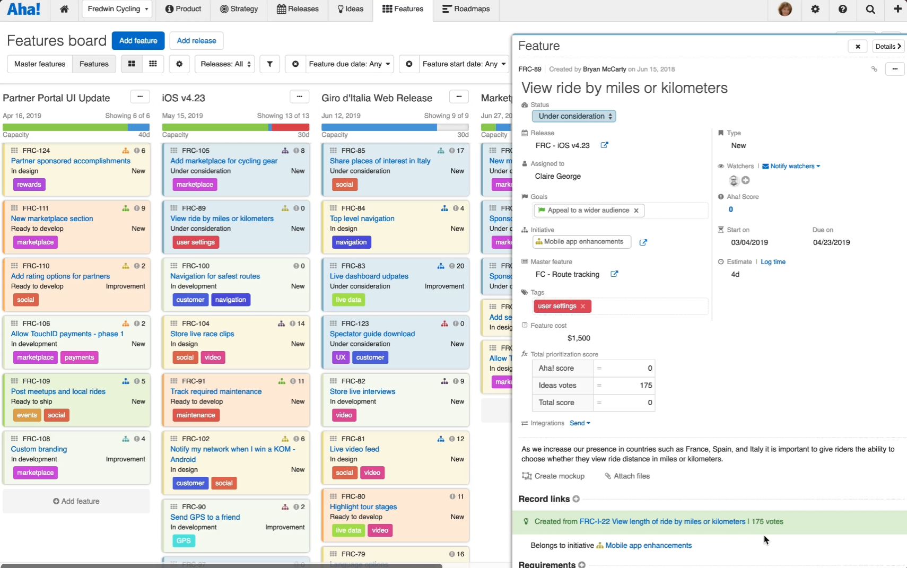

Background
Since it was founded in 2013, Aha! has grown into the #1 roadmap software. In fact, they were pioneers in the space, building a better alternative to tools like Excel and PowerPoint for Product Managers.
The Challenge
I was tasked with redesigning the application's record detail pages, which can appear in either full screen or a drawer view, which pops up over content and takes up approximately 25% of the screen. A deep and complex piece of software, Aha! had over 20 different record types, each with a details view. Because of this, record detail pages were some of the most commonly used parts of the interface -- they were a crucial part of the successful use of Aha! This was a monumental task, and the risk was very high.
The original details pages were extremely information dense. While there were benefits to being able to see a maximum amount of information "above the fold," the UI was difficult to parse and felt daunting to non-power users (power users just learned the UI over time).

My Role
I had the opportunity to be a part of the vision-casting for this project, participating in, and at times facilitating, the design sprints. From there, I was tasked with the role of primary product designer on the project.

As primary designer, I was responsible for working closely with the Mobile Product Manager as well as Product Managers for the applications we were integrating to research, prioritize, conceptualize, and design the overall user experience and interface of the application. I also spent time acting as Scrum Master for the mobile development team.

Ready for more? Check out more of my work here.